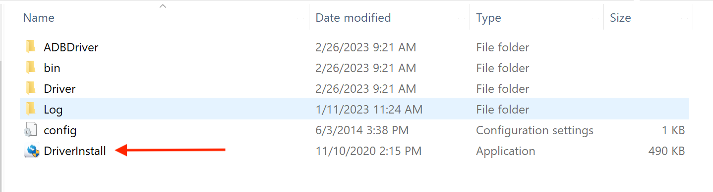
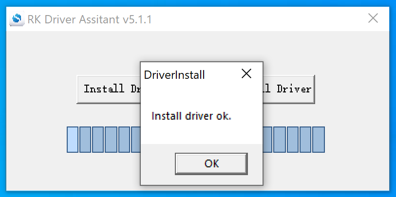
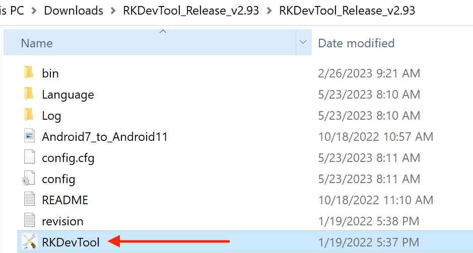

Buildroot Linux Qt 5.15 OS¶
Buildroot Linux Qt 5.15 OS on RK3568 User Manual
Flashing OS Image¶
Download Required Tools¶
If you want a fresh OS, you can flash your Chipsee industrial PC.
You need two tools to flash the Buildroot Linux Qt 5.15 OS image to the RK3568 PC. The first is DriverAssistant_v5.1.1, the second is RKDevTool_v2.93, you can download all of them here.
These tools are Windows executables, please execute them on a Windows machine.
If you’ve been using a prior version of DriverAssistant, click uninstall before installing DriverAssistant_v5.1.1.
 {kind=link}
{kind=link}
Download Prebuilt OS Images¶
If you haven’t downloaded the prebuilt OS images, you can find one here.
Start Flashing¶
After installing the DriverAssistant, you can now start to flash an OS image to the RK3568 board with RKDevTool. Double click the program to start flashing. The tool has English and Chinese language support.
{kind=link}
STEP 1:
Connect the Type-C cable and power on the board. (If unexpected messages occur at any of the following steps, try plugging the Type-C cable again.)
Click Upgrade Firmware tab.
Click Firmware button to select a .img Buildroot Linux Qt 5.15 image file. The screenshots show a debian11 img file is selected, but this is applicable to other OSes as well.
{kind=link}
STEP 2:
Click Switch button to switch the device to a Loader device.
{kind=link}
STEP 3:
You should see “Found One LOADER Device”.
Click Advanced Function tab.
Click EraseAll button.
You should see “Erasing sectors success” on the right side logs.
{kind=link}
STEP 4:
Click Upgrade Firmware tab.
Click Upgrade button.
You should see Download Firmware progress on the right side logs.
{kind=link}
STEP 5:
After the download firmware progress goes to 100%, the board reboots itself automatically.
After a few minutes, you should see “Found One ADB Device”.
Now your new OS is ready for use.
{kind=link}
Video Tutorial for Flashing OS¶
Here is a video tutorial we made demonstrating the OS installation process described above in Windows in the LOADER mode:
The approach in the video above works best for devices that are still able to boot into the desktop, and when your workstation is a Windows machine. However, if you do not have a Windows machine in the room, you can use the approach below to flash an OS, in a Linux or Mac.
Apart from flashing in LOADER mode, when you’re working on a Linux(X86_64) workstation or MacOS(Intel and Apple Silicon) machine, you can use another approach: MASKROM mode, to flash the OS. There is a PROG button on the Chipsee industrial PC, you can press the button before powering up the device, power up and hold the PROG button for 2~4 seconds, then use a X86_64/darwin_64 upgrade_tool program in the command line to flash the OS, here is a video we made to teach you how to do that in two minutes:
The approach described in the second video works best for devices that are “bricked” (compared to the first approach), it can help rescue your device if your operating system is broken and cannot boot into the desktop. Even if your device is still functional, you can also use this approach to flash an OS, it works in Windows, Linux as well as MacOS.
The command used in the videos are:
For Linux workstation:
sudo ./upgrade_tool_linux_x86-64 ld # to list device
sudo ./upgrade_tool_linux_x86-64 uf ./prebuilt-rk3568-xxx.img # to upload firmware
For MacOS:
./upgrade_tool_darwin64 ld # to list device
./upgrade_tool_darwin64 uf ./prebuilt-rk3568-xxx.img # to upload firmware
And that’s all it takes.
The upgrade_tool used in the video can be download at:
We’ve tested that the MacOS upgrade_tool can execute in M1/Apple Silicon Macs, but you will need to install Rosetta to run this program. For Intel Macs, you do not need Rosetta, you can execute the binary program directly in your terminal.
Also, as noted in the video, do use a absolute path to the firmware file or “./prebuilt-rk3568-xxx.img”, rather than a relative path (e.g. your current directory contains the img file, and you directly use “upgrad_tool uf prebuilt-rk3568-xxx.img”, this will not work). And make sure to use sudo in Linux.
Notice¶
(This Buildroot Linux Qt 5.15 OS User Manual is under active development as of July 20th, 2023)